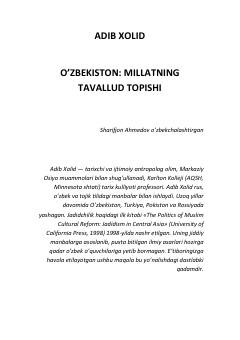

OMO'zbek milliy o'zligining shakllanishi va tarixiy ildizlari haqidagi ilmiy tadqiqot.
Ushbu asar tarixchi Adib Xolid tomonidan yozilgan bo'lib, o'zbek milliy o'zligining shakllanishi, sovet davri siyosati va tarixiy merosning zamonaviy o'zbek xalqi shakllanishidagi o'rnini tahlil qiladi. Kitobda Temuriylar davri, chig'atoy tili va sho'rolar davridagi milliy siyosatning o'zaro bog'liqligi ilmiy nuqtai nazardan yoritib berilgan.